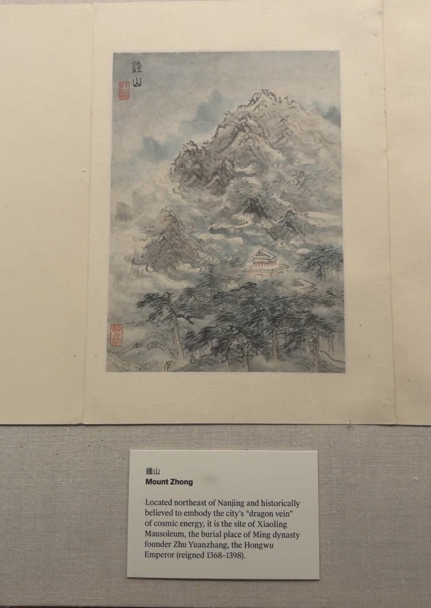

The original artwork
Mount Zhong
Hu Yukun, 1660
From Views of Nanjing for Zhou Lianggong
Ink and color on paper
The Metropolitan Museum of Art
"This album depicts twelve sites in and around Nanjing, ranging from the festive Qinhuai pleasure district to the solemn tomb of the first Ming emperor. More than just famous locations, these are places laden with historical significance and cultural memory. For the recipient of the album, Zhou Lianggong, who lived through the violent overthrow of the Ming dynasty, these pictures would have called to mind experiences from a lost world—evenings with friends at Qinhuai, or commemoration rituals at the emperor’s mausoleum. Painting with a tattered brush, Hu Yukun infused his misty scenes with the sense of a place seen through the haze of memory."
View the museum record ↗